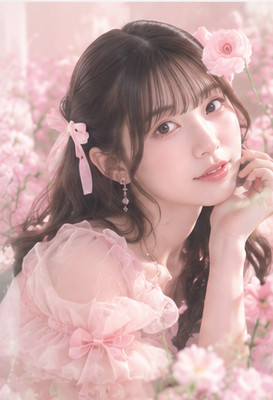
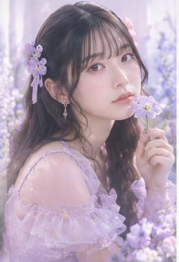
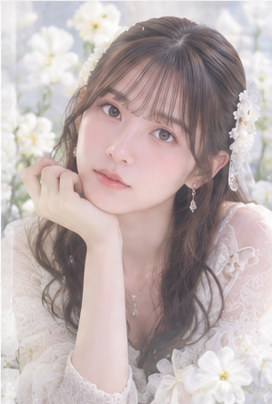
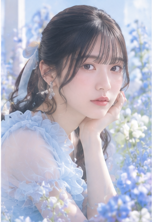
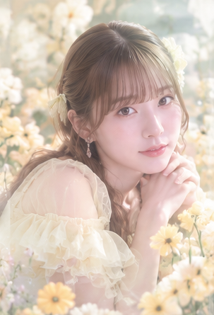

MAYU
Center / Vocal
SORAです！
海や音楽、青いものが大好きです。しっかりしてそうと言われることもありますが、実は少し抜けているところもあります（笑）。
歌もダンスも全力で、LILACの音楽が誰かの毎日を少し明るくできるように頑張ります！
Q. メンバーに意外だと言われることは？
実は料理が好きなところ！
MEMBER

Center / Vocal
SORAです！
海や音楽、青いものが大好きです。しっかりしてそうと言われることもありますが、実は少し抜けているところもあります（笑）。
歌もダンスも全力で、LILACの音楽が誰かの毎日を少し明るくできるように頑張ります！
Q. メンバーに意外だと言われることは？
実は料理が好きなところ！

Dance / Performance
REIです。
香水や映画が好きで、夜にひとりで散歩する時間もお気に入り。
普段は落ち着いていると言われますが、好きなことの話になると、つい夢中になってしまいます。
ステージでは、言葉だけでは伝えきれない感情をダンスや表情で届けたいです。
Q. 自分をひとことで表すなら？
静かな情熱。好きなことにはとことん夢中です。

Vocal
こんにちは、NANAです。
紅茶を飲みながら本を読んだり、美術館を巡ったりする時間が好きです。
メンバーからはお姉さんのようだと言われることが多く、みんなの話を聞くのも好きです。
歌声を通して、聴いてくれる人の心にそっと寄り添えたら嬉しいです。
Q. いつか挑戦してみたいことは？
ピアノの弾き語りを披露してみたいです！

Vocal / Dance
SORAです！
海や音楽、青いものが大好きです。しっかりしてそうと言われることもありますが、実は少し抜けているところもあります（笑）。
歌もダンスも全力で、LILACの音楽が誰かの毎日を少し明るくできるように頑張ります！
Q. メンバーに意外だと言われることは？
実は料理が好きなところ！

Rap / Mood maker
やっほー！MEIです♡
甘いものとお買い物、猫が大好き！メンバーといるとずっと笑っている気がします。人を笑わせることも好きで、よくモノマネをしています（笑）。
歌もダンスも全力で、LILACの音楽が誰かの毎日を少し明るくできるように頑張ります！
ラップではいつもと少し違う一面を見せられるように頑張っています。みんなと楽しい時間をいっぱい作りたいです！
Q. LILACでの自分の役割は？ みんなを笑顔にするムードメーカー！